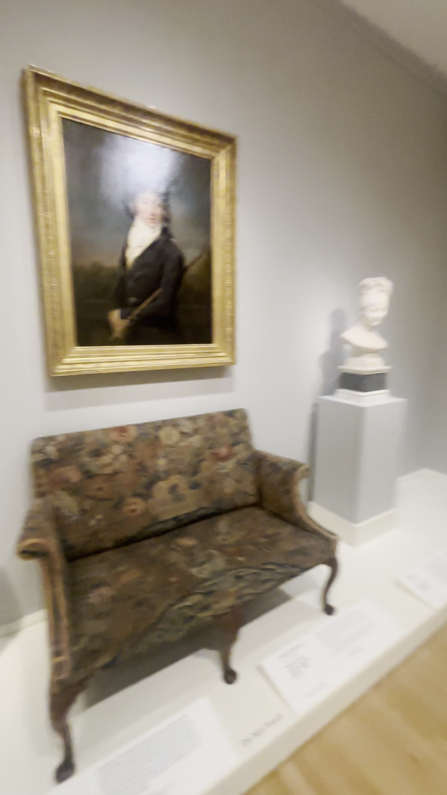
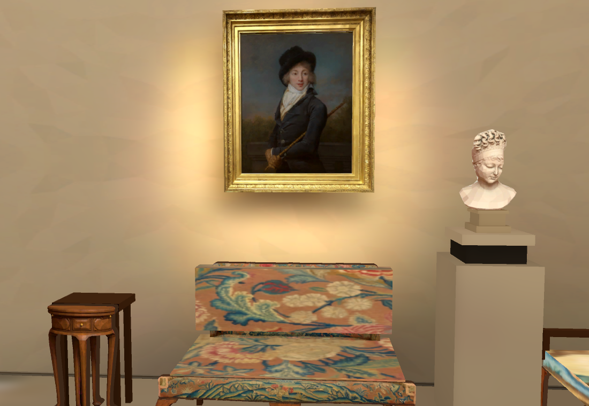
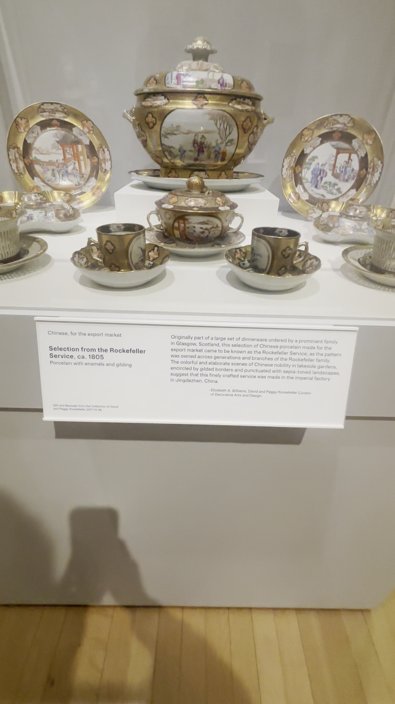
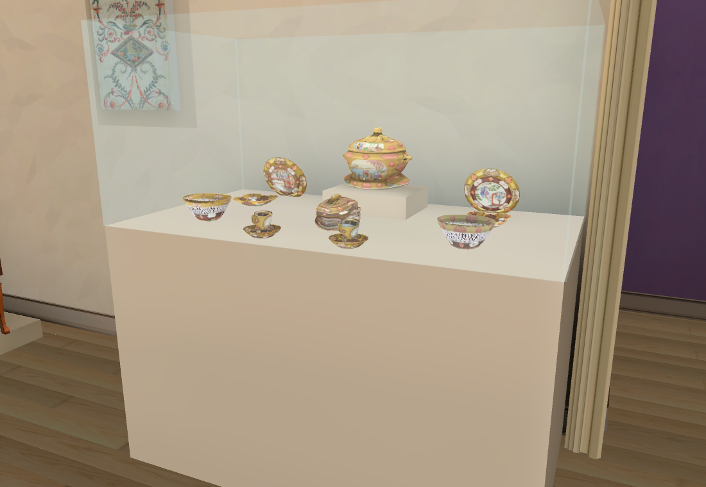
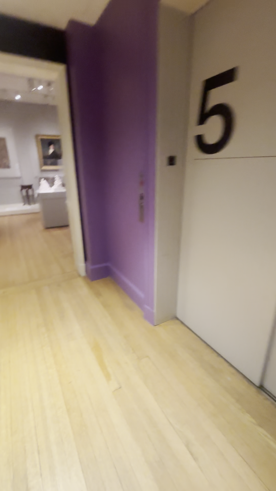
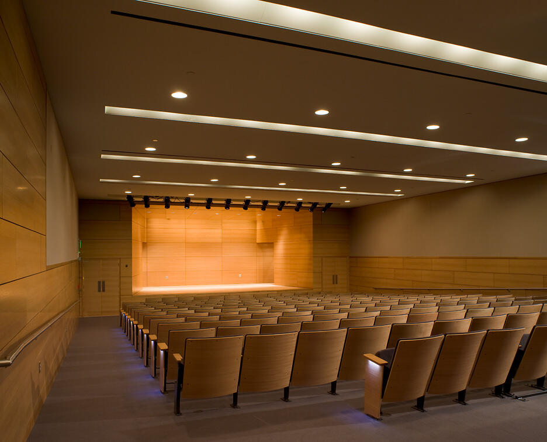
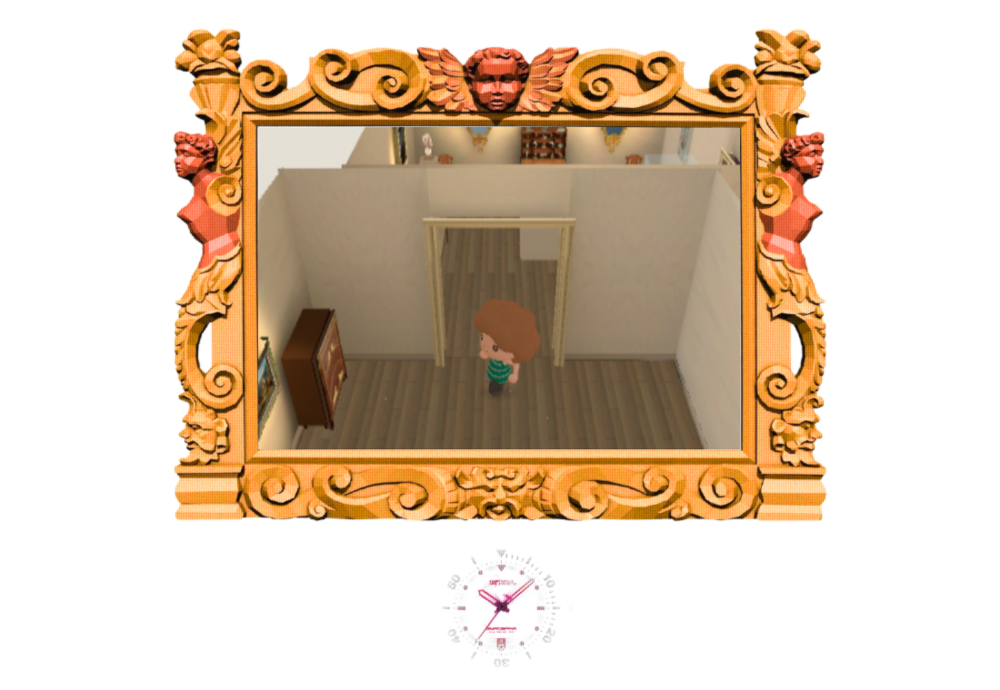
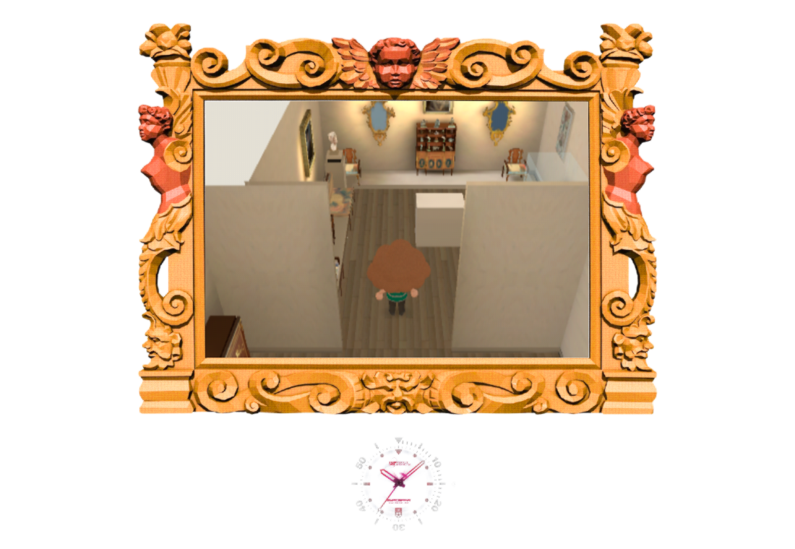

Collection reconstruction · wide-shot corrections v26
All 2,485 extracted survey frames from the ten videos have now been inspected. Reconstruction remains unfinished: room sizes and many object positions need further fitting, most new rooms are not built, and missing displays still need catalogue matching and Muse passes.
Open the walkable demo · WASD move · Space reset · 1/2 earlier room views. Previous stone arches and room-shell review.
Sofa beneath its portrait

Source139.25s, IMG_6380: settee directly under Romany portrait, bust next to it.
Current: sofa centre now follows the portrait centre. Absolute wall offsets, upholstery/hidden profiles and frame shape remain provisional; approximate camera, not a calibrated pixel fit.Gold service: solid case base

Source173.25s: ivory base extends to floor beneath the Chinese export service.
Corrected native pedestal with collision; pink Worcester retains its suspended tray and legs. Case height/position and vessel profiles still provisional.Purple painted wall · one Muse pass

Source120.25s: purple wall and elevator5 by Rockefeller entry. Only the short connector threshold is currently modelled.Baked prototype wall. Smooth contrast reduction keeps the source paint character; extended corridor, elevator, signage and exact colour are not complete. Native Muse output · OpenRouter meta/muse-image · $0.01. Facets were too strong for source smooth plaster.
Native Muse output · OpenRouter meta/muse-image · $0.01. Facets were too strong for source smooth plaster. Deterministic tile: contrast reduced to12%, mirrored edges checked equal. Original Muse output retained.
Deterministic tile: contrast reduced to12%, mirrored edges checked equal. Original Muse output retained.Source-wide room connections
The grey French gallery joins two distinct stair halls: the piano/skylight stairs at one end and marble/fireplace stairs at the other. It also opens to Grand Gallery and the purple connector. The lion landing has THREE distinct doors: medieval room, modern painting room, and a perpendicular ancient-sculpture gallery. These surveyed rooms have not yet been added to the native map.
 Grey gallery: blue Grand Gallery door and neighbouring purple connector.
Grey gallery: blue Grand Gallery door and neighbouring purple connector. Lion landing: separate white sculpture gallery door, medieval door, then modern painting entrance beside the lion.
Lion landing: separate white sculpture gallery door, medieval door, then modern painting entrance beside the lion.All surveyed groups, frame ranges and observed connections · Ten-video coverage and remaining acceptance. Museum official diagrams are schematic2020 plans, not measured current geometry: Floor5, Floors3/4.

Six new catalogue matches
Includes Courbet43.571, Corot24.089, Rodin23.005, Neo-Babylonian lion34.652, Braque48.248 and Cézanne41.012. The modern sculpture is seated, and the painting room has straight boards; early standing/herringbone descriptions were corrected from wider views.
Metcalf Auditorium
 Source: fixed seating, wood acoustic stage, white ceiling beams and side exits; entire360-frame survey reviewed.
Source: fixed seating, wood acoustic stage, white ceiling beams and side exits; entire360-frame survey reviewed.
RISD official photograph matches the room. Actual video row/seat counts and museum connection remain unresolved; room not yet built.Official museum room identification
Playtest evidence
Native RTX4070SUPER:38/38 collision/camera checks, p95 30.00ms. Chrome154/RTX ANGLE:38 engine checks plus actual keyboard round trip, p95 29.63ms, no runtime/JS errors. Both remain below60fps acceptance. Software-rendered Chrome also passed functional checks; its133ms p95 is retained separately. Native LightmapGI bake:413 surfaces,32.36s using CPU software Vulkan.

Actual Chrome keyboard: crossed from Rockefeller into European gallery.
Actual Chrome keyboard: returned through the same doorway.Repository checks and diff check passed. Shell playtest45/50: four pre-existing layout/pixel mismatches and dip timing; frozen Shell tests unchanged. New Muse spend$0.01, cumulative map actual$0.65/conservative$0.66 including unresolved submission. Heartbeat disabled; no Viewer changes. Next: fit the purple/grey/Grand Gallery loop against reciprocal wide shots before installing its missing Muse architecture and verified objects.
All five newly reviewed surveys · 70 sheets
main-hall-survey-v1
 IMG_6380-001-024.jpg
IMG_6380-001-024.jpg IMG_6380-025-048.jpg
IMG_6380-025-048.jpg IMG_6380-049-072.jpg
IMG_6380-049-072.jpg IMG_6380-073-096.jpg
IMG_6380-073-096.jpg IMG_6380-097-120.jpg
IMG_6380-097-120.jpg IMG_6380-121-144.jpg
IMG_6380-121-144.jpg IMG_6380-145-168.jpg
IMG_6380-145-168.jpg IMG_6380-169-192.jpgIMG_6380-193-216.jpg
IMG_6380-169-192.jpgIMG_6380-193-216.jpg IMG_6380-217-240.jpg
IMG_6380-217-240.jpg IMG_6380-241-264.jpg
IMG_6380-241-264.jpg IMG_6380-265-288.jpg
IMG_6380-265-288.jpg IMG_6380-289-312.jpg
IMG_6380-289-312.jpg IMG_6380-313-336.jpg
IMG_6380-313-336.jpg IMG_6380-337-360.jpg
IMG_6380-337-360.jpg IMG_6380-361-384.jpg
IMG_6380-361-384.jpg IMG_6380-385-408.jpg
IMG_6380-385-408.jpg IMG_6380-409-432.jpg
IMG_6380-409-432.jpg IMG_6380-433-456.jpg
IMG_6380-433-456.jpg IMG_6380-457-480.jpg
IMG_6380-457-480.jpg IMG_6380-481-504.jpg
IMG_6380-481-504.jpg IMG_6380-505-521.jpg
IMG_6380-505-521.jpgIMG_6381-survey-v1
 IMG_6381-001-024.jpg
IMG_6381-001-024.jpg IMG_6381-025-048.jpg
IMG_6381-025-048.jpg IMG_6381-049-072.jpg
IMG_6381-049-072.jpg IMG_6381-073-096.jpg
IMG_6381-073-096.jpg IMG_6381-097-120.jpg
IMG_6381-097-120.jpg IMG_6381-121-144.jpg
IMG_6381-121-144.jpg IMG_6381-145-168.jpg
IMG_6381-145-168.jpg IMG_6381-169-192.jpg
IMG_6381-169-192.jpg IMG_6381-193-198.jpg
IMG_6381-193-198.jpgIMG_6387-survey-v1
 IMG_6387-001-024.jpg
IMG_6387-001-024.jpg IMG_6387-025-048.jpg
IMG_6387-025-048.jpg IMG_6387-049-072.jpgIMG_6387-073-096.jpg
IMG_6387-049-072.jpgIMG_6387-073-096.jpg IMG_6387-097-120.jpg
IMG_6387-097-120.jpg IMG_6387-121-144.jpg
IMG_6387-121-144.jpg IMG_6387-145-168.jpg
IMG_6387-145-168.jpg IMG_6387-169-171.jpg
IMG_6387-169-171.jpgIMG_6379-survey-v1
 IMG_6379-001-024.jpg
IMG_6379-001-024.jpg IMG_6379-025-048.jpg
IMG_6379-025-048.jpg IMG_6379-049-072.jpg
IMG_6379-049-072.jpg IMG_6379-073-096.jpg
IMG_6379-073-096.jpg IMG_6379-097-120.jpg
IMG_6379-097-120.jpg IMG_6379-121-144.jpg
IMG_6379-121-144.jpg IMG_6379-145-168.jpg
IMG_6379-145-168.jpg IMG_6379-169-192.jpg
IMG_6379-169-192.jpg IMG_6379-193-216.jpg
IMG_6379-193-216.jpg IMG_6379-217-240.jpg
IMG_6379-217-240.jpg IMG_6379-241-264.jpg
IMG_6379-241-264.jpg IMG_6379-265-288.jpg
IMG_6379-265-288.jpg IMG_6379-289-312.jpg
IMG_6379-289-312.jpg IMG_6379-313-336.jpg
IMG_6379-313-336.jpg IMG_6379-337-360.jpg
IMG_6379-337-360.jpg IMG_6379-361-365.jpg
IMG_6379-361-365.jpgIMG_6378-survey-v1
 IMG_6378-001-024.jpg
IMG_6378-001-024.jpg IMG_6378-025-048.jpg
IMG_6378-025-048.jpg IMG_6378-049-072.jpg
IMG_6378-049-072.jpg IMG_6378-073-096.jpg
IMG_6378-073-096.jpg IMG_6378-097-120.jpg
IMG_6378-097-120.jpg IMG_6378-121-144.jpg
IMG_6378-121-144.jpg IMG_6378-145-168.jpg
IMG_6378-145-168.jpg IMG_6378-169-192.jpg
IMG_6378-169-192.jpg IMG_6378-193-216.jpgIMG_6378-217-240.jpg
IMG_6378-193-216.jpgIMG_6378-217-240.jpg IMG_6378-241-264.jpg
IMG_6378-241-264.jpg IMG_6378-265-288.jpg
IMG_6378-265-288.jpg IMG_6378-289-312.jpg
IMG_6378-289-312.jpg IMG_6378-313-336.jpg
IMG_6378-313-336.jpg IMG_6378-337-360.jpg
IMG_6378-337-360.jpg